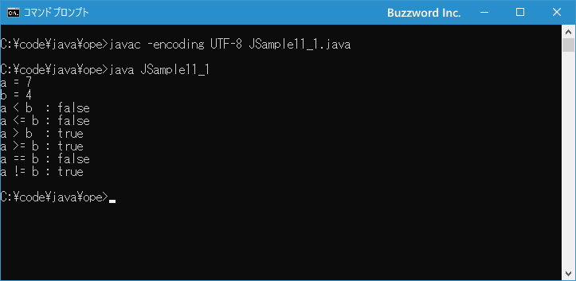

関係演算子と等価演算子
関係演算子は主に条件分岐や繰り返し処理の条件式で使用されるもので、演算子の左辺と右辺の値を比較して結果として true または flase の値を返します。 2 つの値が等しい、または大きいか小さいかなどの比較を行うことができます。ここでは関係演算子の使い方について解説します。
関係演算子の使い方
関係演算子は演算子の左辺と右辺を比較して true または false を返します。 2 つの値をどのように比較するかによって、次のような関係演算子が用意されています。
| 演算子 | 使用例 | 意味 |
|---|---|---|
| < | A < B | AはBより小さい |
| <= | A <= B | AはBより小さいか等しい |
| > | A > B | AはBより大きい |
| >= | A > B | AはBより大きいか等しい |
| == | A == B | AとBは等しい |
| != | A != B | AはBは等しくない |
もし関係演算子を使った式が A < B だった場合、 A が B よりも小さかった場合は式の評価が true となります。小さくなかった場合は false となります。
左辺の値 < 右辺の値
関係演算子がよく使用されるのが if 文などの条件分岐や while 文などの繰り返しです。例えば次のように while 文の条件式の中で関係演算子が使用されます。
int count = 1;
while (count < 10){
System.out.println("count = " + count);
count++;
}
それではそれぞれの関係演算子の使い方について見ていきます。
大きいか小さいかを比較する
2 つの値の大きさを比較する関係演算子は < 、 <= 、 > 、 >= の 4 つが用意されており、それぞれ「小さい」「以下」「大きい」「以上」を表します。次のサンプルをみてください。
int a = 7; int b = 4; System.out.println(a < b); // false System.out.println(a <= b); // false System.out.println(a > b); // true System.out.println(a >= b); // true
演算子の左辺の値が右辺の値よりも大きい場合です。それぞれの式を評価すると true または false のどちらかとなります。
もう一つサンプルをみてください。
int a = 7; int b = 7; System.out.println(a < b); // false System.out.println(a <= b); // true System.out.println(a > b); // false System.out.println(a >= b); // true
演算子の左辺の値と右辺の値が等しい場合です。それぞれの式を評価すると true または false のどちらかとなります。
等しいか等しくないか(等価演算子)
2 つの値が等しいかどうかを調べる関係演算子は == 、 != の 2 つが用意されており、それぞれ「等しい」等しくない」を表します。この演算子は等価演算子と呼ばれることもあります。次のサンプルをみてください。
int a = 7; int b = 4; int c = 4; System.out.println(a == b); // false System.out.println(a == c); // false System.out.println(b == c); // true System.out.println(a != b); // true System.out.println(a != c); // true System.out.println(b != c); // false
== 演算子の場合、左辺と右辺の値が等しい場合は式の評価が true となり、等しくない場合には false となります。 != 演算子の場合には、左辺と右辺の値が等しい場合は式の評価が false となり、等しくない場合には true となります。
それでは簡単なサンプルプログラムを作って試してみます。テキストエディタで次のように記述したあと、 JSample11-1.java という名前で保存します。
class JSample11_1{
public static void main(String[] args){
int a = 7;
int b = 4;
System.out.println("a = " + a);
System.out.println("b = " + b);
System.out.println("a < b : " + (a < b));
System.out.println("a <= b : " + (a <= b));
System.out.println("a > b : " + (a > b));
System.out.println("a >= b : " + (a >= b));
System.out.println("a == b : " + (a == b));
System.out.println("a != b : " + (a != b));
}
}
コンパイルを行います。
javac -encoding UTF-8 JSample11_1.java
その後で、次のように実行してください。
java JSample11_1

二つの値を比較し、それぞれの関係演算子を含む式がどのように評価されるのかを出力しました。
参照型の場合の等価演算子について
int 型や double 型などの基本データ型の場合、等価演算子である == は値が同じであれば true と評価されます。次のサンプルをみてください。
int a = 7; int b = 7; System.out.println(a == b); // true
それに対して配列やクラスのインスタンスなど参照型の値の場合、それぞれのオブジェクトが同じ値を持っていても == 演算子は false となります。次のサンプルをみてください。
int[] a = {85, 78, 92};
int[] b = {85, 78, 92};
System.out.println(a == b); // false
二つの配列は同じ値が格納された要素を持っていますが、別々のオブジェクトのため == 演算子で評価するとは false となります。
参照型の場合は、比較する二つの変数が同じオブジェクトを参照している場合に == 演算子は true となります。次のサンプルを見てください。
int[] a = {85, 78, 92};
int[] b = a;
System.out.println(a == b); // true
配列を一つ定義したあと、もう一つの配列に代入します。二つの配列は同じオブジェクトを参照しているため == 演算子で評価すると true となります。
このように基本データ型とは異なり参照型の値の場合は同じオブジェクトを参照している場合にだけ == 演算子は true となるのでご注意ください。(なお参照型であっても String クラスのオブジェクトは例外で、格納されている文字列が同じ値の場合には == 演算子でも true となります)。
-- --
関係演算子の使い方について解説しました。
( Written by Tatsuo Ikura )

著者 / TATSUO IKURA
初心者～中級者の方を対象としたプログラミング方法や開発環境の構築の解説を行うサイトの運営を行っています。